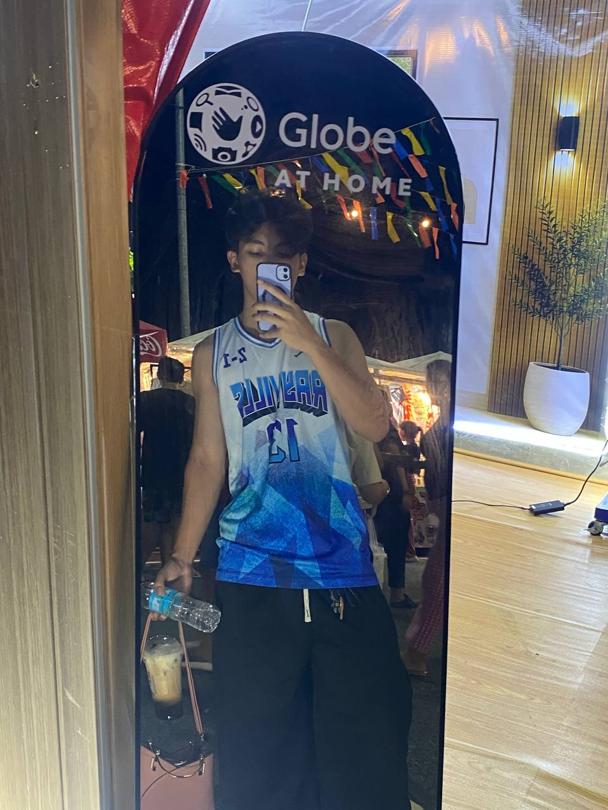

University of Science and Technology of Southern Philippines
2026 – PresentBachelor of Science in Information Tecnology
Learning programming, problem-solving, and technology while working on class activities and personal projects.
I'm Hadji Kim S. Macasarte, who is passionate about learning new things, exploring my interest, and improving my skills. I enjoy discovering new ideas, facing challenges, and gaining experience that help me grow both personally and academically.
I believe that ecery experience is an opportunity to learn something valuable. I'm always trying my best to learning new technologies, improving my skills, and exploring ways to make the web better.

The learning journey that shaped my skills and interests.
Learning programming, problem-solving, and technology while working on class activities and personal projects.
Developed foundational academic, communication, collaboration , Basic Java Programming, and Problem-solving.
The activities and experiences that help me grow.
Practicing website development, learning coding fundamentals, and creating projects to improve my technical skills.
A collection of things I've created and learned from Introduction to Computing.
A personal website introducing my background, skills, education, and projects.
An upcoming project where I can practice my skills and explore new ideas.
A little more about who I am and what motivates me.
I'm a clollege student who's interested in technology, creativity, and web development. I enjoy discovering how websites work and finding ways to turn ideas into digital experiences.
My goal is to continue learning, improve my skills, and build projects that are useful, accessible, and visually appealing.
The End
I’m always open to discussing new opportunities, learning from experienced developers, or collaborating on exciting projects.
Say Hello ↗